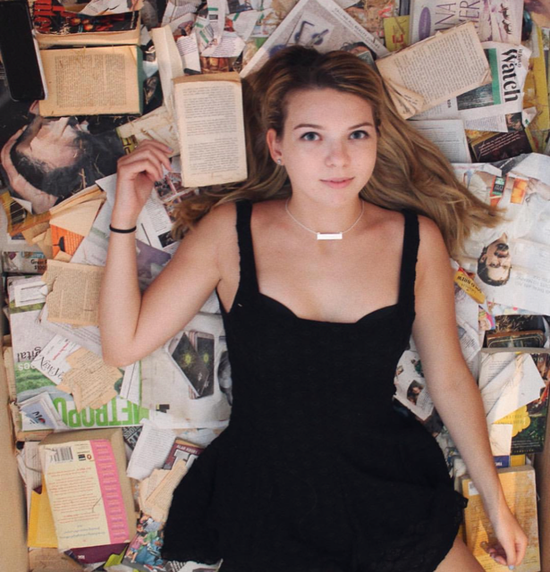
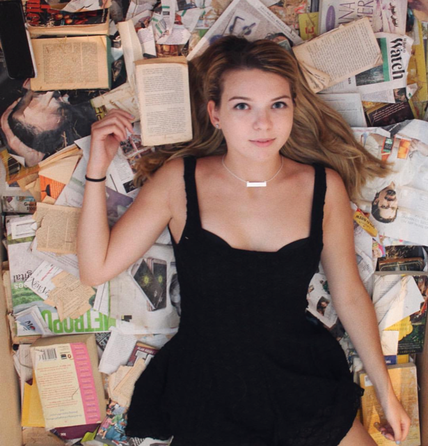

Welcome to Bree's Photography Website! Here you can find background and contact information located in the links above. Discover the eye capturing photographs. Her recent series is inspired by Sally Mann's series 'Faces'. Some of her inspirations include abstract art and daily life. Her process is all about ignoring the colors of the world and shooting in Black & White. The outcome is not planned and many happen through accidents. Enjoy and browse around, and as Bree would say "Be Happy!"
 
